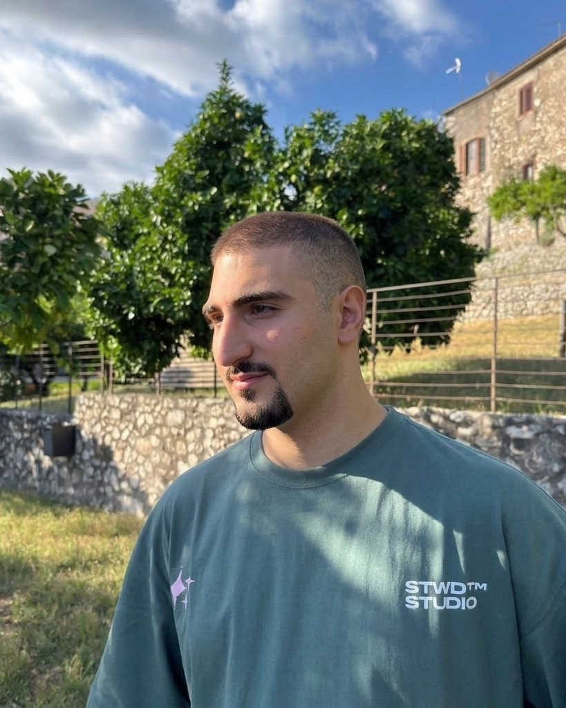

scroll down ↓
Luca Bodanza2026
Ciao! Mi chiamo Luca Bodanza e sono un Graphic Designer. Progetto sistemi visivi — brand identity, piattaforme web, materiali corporate e Packaging design — partendo dal brief, per costruire un pensiero visivo.
Tre cartelle,
tutti i miei lavori

Un designer che
ragiona per sistemi
Sono Luca Bodanza, graphic designer. Ho studiato grafica ipermediale all’istituto professionale A.F.G.P. Artigianelli di Brescia e, dal secondo al quarto anno, ho svolto quattro stage in quattro aziende, tra grafica digitale e stampa: 1200 ore di lavoro sul campo.
Oggi progetto cataloghi tecnici e piattaforme web per LuBe Consulting e Procryon. Nel 2025/26 ho seguito l’IFTS “Tecniche della promozione del Made in Italy per la moda, il design ed eventi” all’ITS Machina Lonati, per aggiungere marketing, comunicazione e strategia alla mia base tecnica.
Creativo, socievole, con una buona elasticità mentale. Chi lavora con me mi descrive volenteroso di imparare, intraprendente ed entusiasta.
Come lavoro
- 01
Analisi
Parto dal contesto, dall’obiettivo e dal pubblico. Prima di disegnare, capisco a chi parla il progetto e cosa deve ottenere.
- 02
Concept
Armonia visiva, colore, gerarchia degli elementi ed efficacia del messaggio. Quando serve, più proposte a confronto: per First Stop sono stati due concept.
- 03
Sistema
Una struttura chiara: testi, immagini e asset separati, uno stile pulito e leggibile con un tratto riconoscibile, poi le declinazioni per ogni canale.
- 04
Consegna
Non mi limito a ciò che viene richiesto: cerco soluzioni che funzionino davvero, sul piano visivo e su quello strategico. File in ordine, scadenze rispettate.
Il percorso che
mi ha portato qui
Percorso scolastico
-
2021 — 2024
Grafica ipermediale
A.F.G.P. Artigianelli, Brescia
Qualifica di Grafico ipermediale (2022/23) e Diploma tecnico grafico (2023/24). Quattro stage in quattro aziende, tra grafica digitale e stampa — Nadir 2.0, Coop Service, Geo-Green, Riviva — per 1200 ore in cui imparo il mestiere e il ritmo di un’azienda vera.
-
2025 — 2026
IFTS Made in Italy
ITS Machina Lonati Academy
Marketing, strategia, comunicazione, organizzazione eventi e strategia di vendita. Realizzazione della tesi su un configuratore 3D di connettori industriali per LuBe. LuBe Connect → · Save The Duck →
-
2026 — 2028
ITS Digital Marketing & Communication Manager
ITS Machina Lonati Academy
ITS Content Creation, Storytelling, Podcasting e Strategie di Web Marketing.
Percorso professionale
-
2022
Nadir 2.0
Stage · Nuvolento (BS)
Stagista Graphic Designer. Progettazione grafica per stampa e digitale, gestione del reparto di rilegatura di prodotti pubblicitari, stampa e taglio di adesivi.
-
2022 — 2023
Coop Service
Stage · Rezzato (BS)
Stagista Graphic Designer. Gestione dei dati e stampa di prodotti postali, gestione dei servizi di stampa digitale per legatoria.
-
2023
Geo-Green
Stage · Gavardo (BS)
Stagista Graphic Designer. Contenuti grafici per i canali social (Instagram, Facebook) e gestione fotografica dei vari prodotti in vendita.
-
2023 — 2024
Riviva Pet
Stage · Nuvolento (BS)
Stagista Graphic Designer. Contenuti grafici per i canali social (Instagram, Facebook) e file per i materiali promozionali stampati: volantini, etichette, banner.
-
Promo One
-
2024 — 2025
Timmagine
Stage in agenzia · Cunettone (BS)
Stagista Graphic Designer in agenzia: stampa per fiere ed eventi, immagini per il web, contenuti per Instagram, Facebook e LinkedIn. Circa 880 ore in cui imparo a gestire più progetti, scadenze e file ordinati.
Aziende dei lavori consegnati durante lo stage
-
2025 — 2026
LuBe Consulting
Collaborazione
Comincio a collaborare con LuBe Consulting a luglio 2025 sui materiali tecnici del partner ELSAP. La collaborazione riprende nel 2026, e arriviamo alla pubblicazione di ben 17 cataloghi tecnici. Cataloghi ELSAP →
-
2026 — 2027
Procryon
Cataloghi + sviluppo piattaforma web-app
Affiancando per la progettazione e lo sviluppo di una piattaforma web-app all’avanguardia per la consultazione dei cataloghi tecnici, e la costruzione delle richieste di offerta. Cryon DSGN →
Competenze
- IllustratorVector & Logo
- InDesignLayout & Stampa
- PhotoshopFoto & Mockup
- Premiere ProVideo
- Adobe XDUI / UX
- FigmaUI / UX
- HTML / CSS / JSFront-end
- AI IntegrationIntegrazione strategica dell’AI per soluzioni professionali